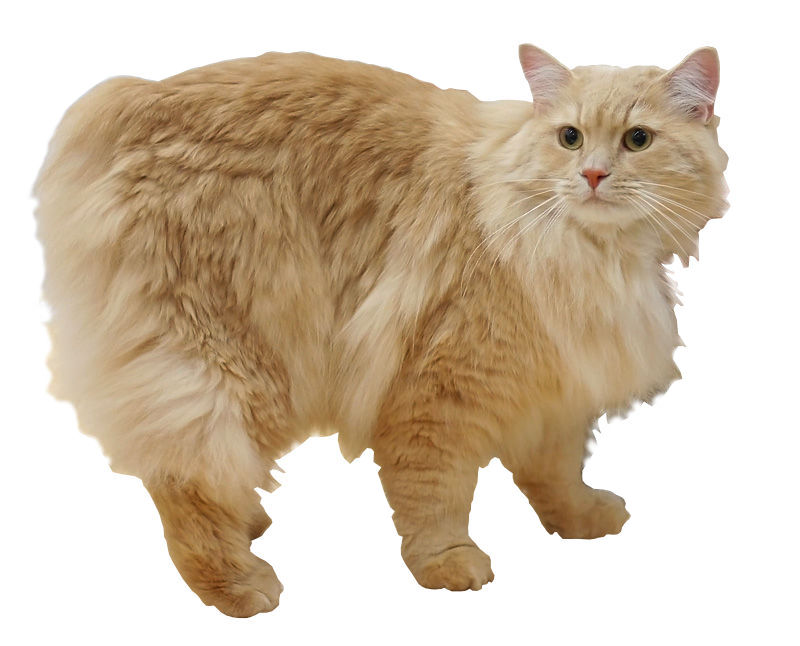

The Cymric cat is a longhair cat that comes sometimes with a tail, and sometimes without. These cats need attention and may not do so well left alone for long. They are actually one of the oldest known cat breeds and are sometimes known as a 'bunny cat' because their hind legs are longer than their front legs, they have a stubby tail, and they hop around while runing. Cymrik is pronounced "Kum-ric".
